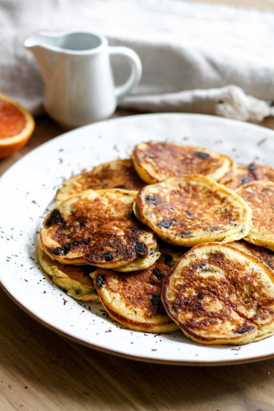

Chocolate Pancake Recipe

Description:
This is my go-to recipe for chocolate chip pancakes. The pancakes come out super fluffy and the whole family
loves them. Add as many chocolate chips as you like. Can easily be doubled or tripled. Serve with maple syrup if
you like.
Ingredients:
- ¾ cup milk
- 2 tablespoons white vinegar
- 1 cup all-purpose flour
- 2 tablespoons white sugar
- 1 teaspoon baking powder
- ½ teaspoon baking soda
- ¼ teaspoon salt
- 1 large egg
- 2 tablespoons unsalted butter, melted
- 1 teaspoon vanilla extract
- ½ cup miniature chocolate chips, or more to taste
- cooking spray
Steps:
- Step 1
Combine milk and vinegar in a bowl and set aside for 5 minutes to "sour" the milk. You are essentially
making your own buttermilk with this step.
- Step 2
Combine flour, sugar, baking powder, baking soda, and salt in a large mixing bowl.
- Step 3
Whisk egg, butter, and vanilla extract into "soured" milk until well combined. Pour flour mixture into the
wet ingredients and whisk until just combined. Fold in chocolate chips. Batter will be thick. Allow batter
to rest for 5 minutes.
- tep 4S
Heat a large skillet over medium-low heat, and coat with cooking spray.
- Step 5
Pour about ¼ cup of batter for each pancake onto the skillet. Cook until bubbles appear on the surface, 2 to
4 minutes. Flip pancake with a spatula, and cook until browned on the other side, 2 to 3 more minutes.
Repeat with remaining batter. Serve immediately.